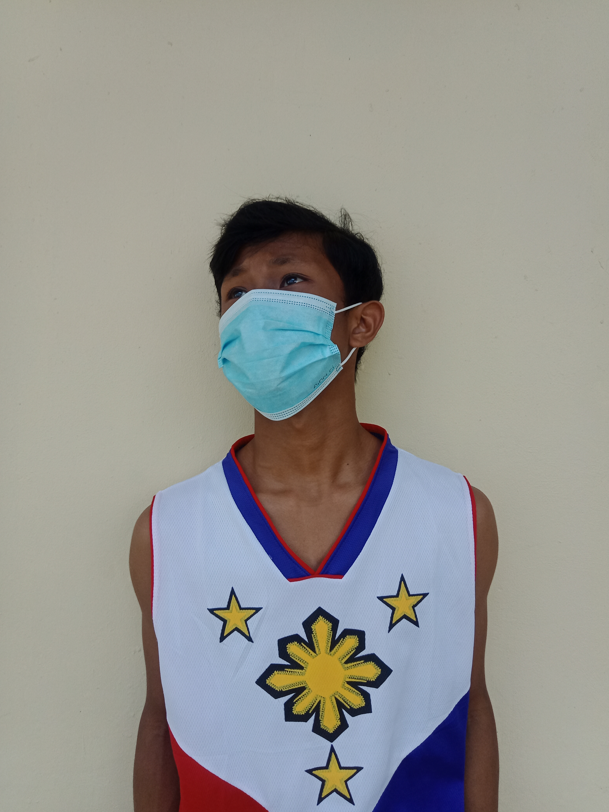
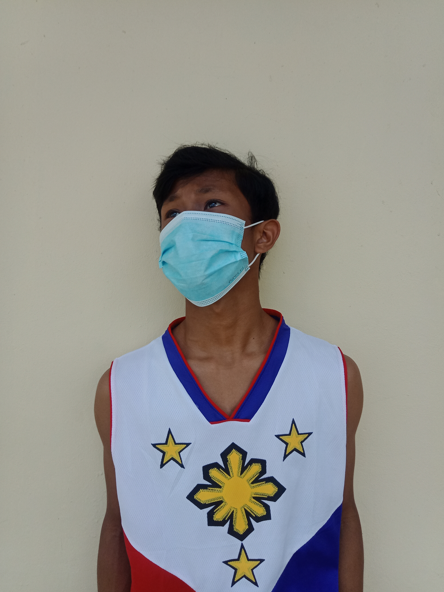
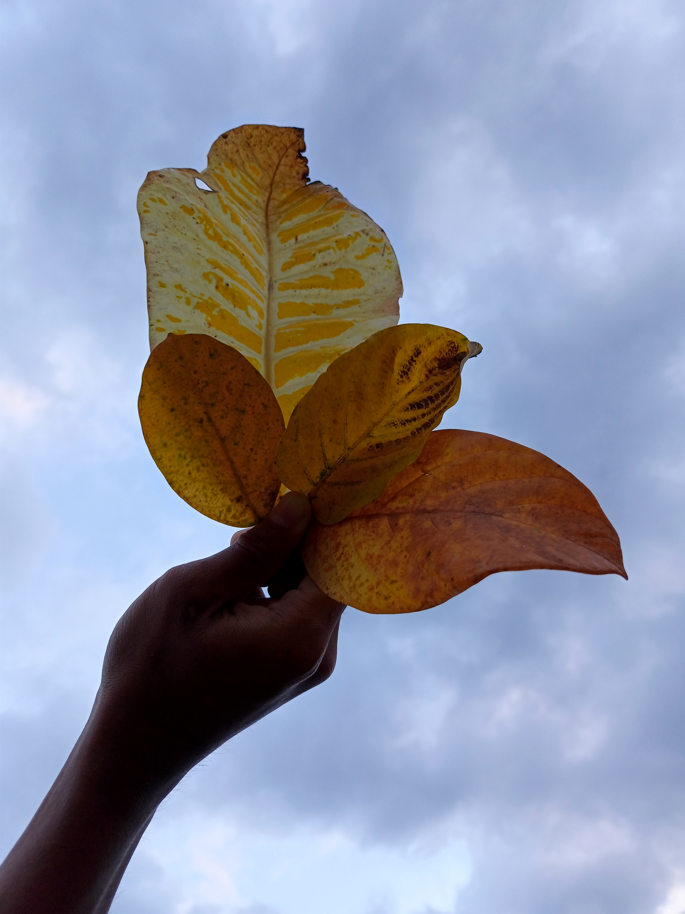
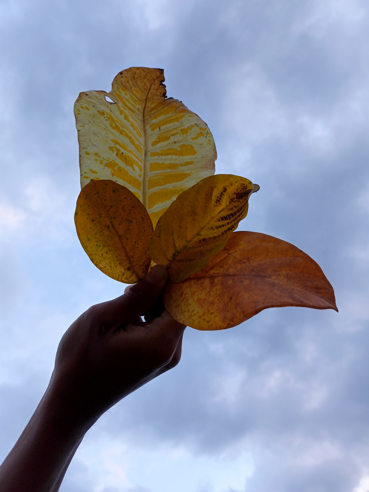

Landscape Photography
Upload Here!
Landscape photography shows the spaces within the world, sometimes vast and unending, but other times microscopic. Landscape photographs typically capture the presence of nature but can also focus on man-made features or disturbances of landscapes. Landscape photography is done for a variety of reasons.
5 Types of Landscape Photography

If you're going somewhere, you're going to take pictures of the landscape. But, did you know there are different types of landscape photography? It's true, and each type comes with its own challenges.
To help you understand landscape photography better, we're going to discuss the 13 types of landscape photography you should master to take home great memories. You'll notice that some of the types relate to the location (i.e., the ocean) and others relate to the photographic technique you're using, such as a panoramic shot. Still others relate to the time of day (i.e., sunrise photography). There's a lot to cover, so, without further ado, let's begin:
1. Mountain Photography
Mountain landscape photography is another favorite. But, one of the challenges with this type of landscape is that you and your gear may have to hike for a distance to get the images you want. That means you'll want to minimize the gear you have to bring. You'll need at least one good lens, a lightweight tripod, and you'll want to bring extra batteries and memory cards.

A good, affordable workhorse lens for mountain photography is a 50mm f/1.8G. Nikon makes one that’s lightweight and very versatile. It produces extremely sharp images, and has a focal length that allows you to get creative with your images. You can photograph minute details of a tree, for example, or wider shots of the surrounding landscape.
2. Forest Photography
Sometimes you can’t see the forest for the trees, and that’s the challenge for the forest landscape photographer. There’s a lot going on in a forest, but when you start to think about the lines created by the trees and the play of the light in the forest, you can get some pretty spectacular shots.
For example, you can use the interplay of light and shadows to create various moods. As the light shines through the leaves of the trees, you get many interesting patterns, and if you take advantage of those, you will be rewarded with some stunning images.
Another tip is seek out contrast and color. For example, the bright colors of changing leaves in the fall. You can also get dramatic images by photographing the trail through the woods, and using the shadows to your advantage.
3. Sunrise/Sunset Photography
Since the sun is the main subject in sunset / sunrise photography, it creates its own set of challenges. The sun rising or setting also creates spectacular colors in the sky, but since you’re also photographing the sun, the contrast between its brightness and the rest of the scene makes it hard to get good exposures.
In this case, you’ll want a high aperture setting, a mid-range ISO setting, and you’ll have to determine the shutter speed with your light meter. When it reads 0, the exposure is correct. It also helps to bracket your shots with slightly different exposure settings, and broaden your subject matter to include more scenery.
4. Clouds Photography
As far photography niches go, this one’s kind of an acquired taste, but by exploring the vastness of the sky, you can capture some wondrous images. To do that, you’ll definitely need your tripod, and a shutter release cable will help as well so that you don’t even have to touch the camera to take the shot. If you don’t have one, you can always set your camera’s timer to automatically take the shot after 2 seconds.
You’ll also probably want a polarizing filter to help improve the contrast between the clouds. You’ll also want to have a good understanding of the different, and somewhat unique, light conditions when photographing clouds. You might have, for example, the sun shining out from behind a cloud and creating both rays of light as well as powerful, vivid colors. To capture those kinds of conditions, you’ll likely want to set your camera to aperture priority mode, use an f stop between f/11 and f/32 to get a larger depth of field, and use a wide angle lens. This will let you make the best of the lighting conditions and capture those nuances as well.
5. Astrophotography
This niche is growing in interest, but it definitely presents challenges. To photography this type of landscape, you’ll definitely need a tripod and shutter release cable since any level of camera shake will blur your image. You’ll also want to frame the night sky with a dramatic foreground. If you don’t have some spectacular landscape scenery to put in the foreground, you can use your own silhouette.
You’ll also definitely need a good understanding of aperture, shutter speed, and ISO settings, because you will certainly be working in reduced light settings. And, you’ll need to adjust your focus. If you want clear stars, you’ll need a shutter speed of 15 seconds or less. You’ll need to open your aperture as wide as possible (i.e., the lowest f stop setting), and your ISO setting will need to be as high as possible without adding more noise. It will need to be 6,400 or higher if you’re looking to capture the cloudy appearance of the Milky Way, for example. And, to improve the clarity of the images, set your focus as far out as it will go, and then step it back just a bit.
 

 
